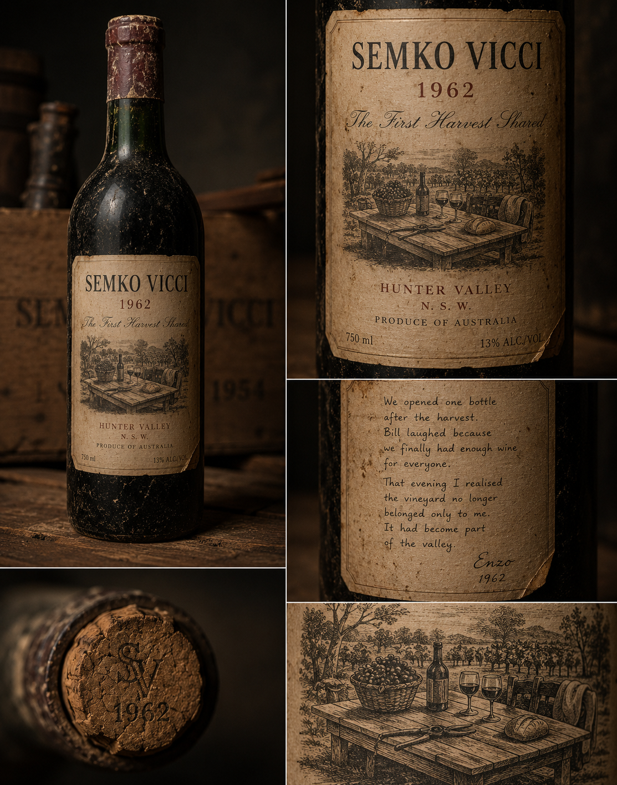

Vintage Collection
Each vintage tells a story. Each bottle holds a memory.


1954 — The First Vintage
1954
The First Vintage. The wine that started it all. The Sangiovese cuttings from Tuscany met the soil of Hunter Valley for the first time.
Deep Roots. Two men, two languages, one dream. The cellar door opens for the first time.
1955

1955 — Deep Roots

1956 — After the Rain
1956
After the Rain. The Shiraz finds its feet. The red clay of Hunter Valley gives the wine its soul.
Trials and Errors. The weather was harsh, the harvest small. But the wine found its character.
1957

1957 — Trials and Errors

1962 — The First Big Order
1962
The First Big Order. Twelve cases to Newcastle. The name Semko Vicci reaches the shelf.